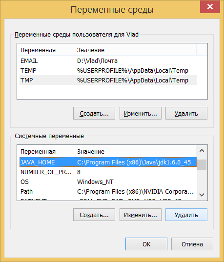

Ключ разработчика
Ключом называется файл с расширением .keystore зашифрованный вашим персональным паролем. Ключ является чрезвычайно важной штукой при создании приложений как для Android, так и для iOS. В первую очередь ключ необходим при обновлении приложения. Система сравнивает ключ новой и существующей версии программы и обновляет программу только при совпадении у них ключей. Если ваше приложение опубликовано в Google Play, то сервис позволит сделать обновление опять же только при совпадении ключей. Таким образом при утере самого файла с ключом или пароля от него вы или кто-либо другой больше никогда не сможете обновить версию приложения. Создать заново утерянный ключ невозможно!
Держите файл с ключом в надёжном месте, помните пароль от него и не давайте никому чужому ни файл, ни пароль. В общем, соблюдайте простые меры безопасности и будете делать приложения долго и счастливо.
Сам ключ имеет срок действия, после окончания которого обновить приложение не удастся. Поэтому рекомендуется устанавливать срок действия на 25 лет и более.
В Corona SDK идёт отладочный ключ debug.keystore, с помощью которого можно подписать приложения для тестирования на устройствах. Но лучше сразу сделать свой ключ с помощью утилиты keytool, она идёт в комплекте с Java. JDK 6 у вас уже должен быть установлен, в противном случае Corona не запустится.
Создание ключа под Windows с помощью keytool
Для начала проверьте, запускается ли вообще keytool через консоль. В Windows нажмите Win+R, введите cmd и Enter. Далее наберите в командной строке keytool и опять Enter. Если выведется сообщение об ошибке, то придётся для начала покопаться в переменных окружения. Щёлкните правой кнопкой на Мой компьютер и выберите Свойства. В появившемся окне выберите пункт Дополнительные параметры системы и нажмите кнопку Переменные среды.

Свойства системы

Переменные среды
В блоке Системные переменные нажмите кнопку Создать... и введите следующее.
Имя переменной: JAVA_HOME
Значение переменной: C:\Program Files (x86)\Java\jdk1.6.0_45
Если путь к JDK отличается, внесите соответствующие правки.
Теперь два раза щёлкаете по переменной Path в том же окне и в значение добавляете в самом конце после точки с запятой %JAVA_HOME%\bin
Стирать существующую строку не надо, только дописать её. Проверьте, что точка с запятой указана верно, все пути заданы правильно без ошибок. Перезагрузите систему и запустите keytool ещё раз. Появление ошибки означает, что переменные среды были заданы некорректно, вернитесь на предыдущий шаг и проверьте всё ещё раз.
В консоли перейдите в желаемую папку, в которой вы хотите создать ключ, с помощью команд cd и d:, где d — имя желаемого диска. И там уже наберите следующее.
keytool -genkey -alias <алиас> -keystore <имя>.keystore" -validity 10000 Здесь:
<алиас> — название ключа; <имя> — желаемое имя файла с расширением .keystore. Срок действия ключа установлен в 10000 дней.
После выполнения команды потребуется указать свой желаемый пароль и файл с ключом будет создан.
Можно упростить генерацию ключа с помощью командного файла, тогда не придётся редактировать переменные окружения. Итак, создайте файл key.cmd со следующим содержанием и запустите его.
"C:\Program Files (x86)\Java\jdk1.6.0_45\bin\keytool.exe" -genkey -alias myalias -keystore "D:\Work\mykey.keystore" -validity 10000
Первым параметром в кавычках идёт путь к keytool, второй параметр в кавычках — это путь к файлу ключей.
Это не все возможные параметры, поэтому за подробностями обращайтесь к документации Oracle.
См. также
Документация Oracle по keytool
https://docs.oracle.com/javase/6/docs/technotes/tools/solaris/keytool.html
Информация о подписывании приложений от Android
http://developer.android.com/tools/publishing/app-signing.html